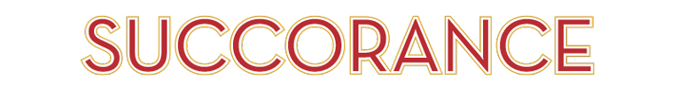

Do you wish you had a more aureate and magniloquent vocabulary?
Do you want to impress larrikins, parvenus, and sybarites at your next klatsch?
Do you often suffer from lethologica or verbigeration?
Are you just looking for pabulum to escape intellectual ennui?
If you answered yes to any of these questions, then you have come to the right
place! Use the words presented in this dictionary to impress your friends, family,
and colleagues. Get ready to hear everyone tell you you’re so fancy!
- adj.
- / ten-den-shuh s /
Having or showing a definite tendency, bias, or purpose
“The educator of a child must get to know his tendentious apperception and remove it.”
–Alfred Adler
- adj.
- / awr-ee-eyt /
Characterized by an ornate style of writing or speaking
“My English professor is so aureate, I can’t understand a word he says.”
- noun
- / en-koh-mee-uh m /
A formal expression of high praise; eulogy
“The emcee gave an arousing encomium for Katherine before she took the stage to accept her award.”

- noun
- / hab-er-dash-er /
A retail dealer in men's furnishings, as shirts, ties, gloves, socks, and hats
“His neighbor owns a splendid haberdasher and has promised to give him discounts.”
- noun
- / oh-bahd /
A piece sung or played outdoors at dawn, usually as a compliment to someone
“Romeo’s aubade at my windowsill last night was a romantic end to my evening.”
- adj.
- / sin-tl-uh nt /
Sparkling
“Butler, may I have another glass of this scintillant champagne?”
- noun
- / shahd-n-froi-duh /
Satisfaction or pleasure felt at someone else's misfortune
“I felt a strange sense of schadenfreude as I watched Henry slip on the thick patch of ice and land flat on his behind.”
- noun
- / soo-bret /
A maidservant in a play, opera, or the like, especially one displaying coquetry, pertness, and a tendency to engage in intrigue; any lively or pert young woman
“Why must I always play the role of the soubrette? My acting is quite supreme enough for the lead role.”
- adj.
- / aw-tok-thuh-nuh s /
Aboriginal; indigenous
“This fern is autochthonous to the rainforest region of Madagascar.”
- adj.
- / sahy-mo-truh-kuh s /
Having wavy hair
“This cymotrichous maiden is the fairest of them all.”
- noun
- / leth-o-loj-ik-a /
The inability to remember a word or put your finger on the right word
“I seem to be experiencing lethologica… I just cannot conjure the right word.”
- adj.
- / ki-mer-i-kuh l /
Unreal; imaginary; visionary; wildly fanciful; highly unrealistic
“The chimerical pursuit of perfection is always linked to some important deficiency, frequently the inability to love.”
-Bernard Grasset
- adj.
- / puhgnk-til-ee-uh s /
Strict or exact in the observance of the formalities or amenities of conduct or actions
“If the quickness of the mind and the fluency of the tongue are too punctilious and sharp, moderate them in your activity and rest.”
–Xun Zi
- adj.
- / puhl-kri-tood-n-uh s /
Physically beautiful; comely
“My darling, you look positively pulchritudinous this evening."
- adj.
- / loh-kwey-shuh s /
Talking or tending to talk much or freely; talkative; chattering; babbling; garrulous
“He who seldom speaks, and with one calm well-timed word can strike dumb the loquacious, is a genius or a hero.”
–Johann Kaspar Lavater
- verb
- / win-oh /
To separate or distinguish (valuable from worthless parts); to subject to some process of separating or distinguishing; analyze critically; sift
“Skeptical scrutiny is the means, in both science and religion, by which deep insights can be winnowed from deep nonsense.”
–Carl Sagan

- noun
- / suhk-er-uh ns /
The act of seeking out affectionate care and social support
“It is only natural to yearn for succorance upon the death of a loved one.”
- adj.
- / ten-uh-brif-ik /
Producing darkness
“She swiftly blew out the candles, a tenebrific gesture that left the cave pitch black.”
- verb
- / ih-pis-tl-ahyz /
To write a letter
“To epistolize to my grandmother is one of my most beloved past-times.”
- adj.
- / kuh-men-suh l /
Eating together at the same table
“The family held a commensal suppertime tradition that was never to be broken.”

- noun
- / stur-nyuh-tey-shuh n /
The act of sneezing
“Please, do cover your mouth upon sternutation as to not spread germs.”
- adj.
- / skoo-kuh m /
Large; powerful; impressive; excellent; first-rate
“Well Lionel, that is a quite a skookum vehicle you have there. Must have been expensive."
- noun
- / pigz-nee /
A darling
“Would you like to meet my daughter? She’s a pigsney."
- adj.
- / doh-ee /
Dull; melancholy; dismal
“Dowie rain pelted the window as he lamented the previous night’s events."
- noun
- / stoo r /
Tumult; confusion; a storm
“Do not cause a stour! I will explain the answer to you."
- noun
- / soh-dal-i-tee /
Fellowship; comradeship; an association or society
“Your mother is attending her knitting sodality tonight."
- noun
- / ver-bij-uh-rey-shuh n /
The constant or obsessive repetition of meaningless words or phrases
“Francis was committed to a psychiatric hospital after the accident, due to his constant verbigeration of the word ‘four.'"
- adj.
- / thuh-las-ik /
Of or relating to seas and oceans
“Anemones, orcas, and pufferfish are thalassic creatures."
- adj.
- / suhb-fuhs-kuh s /
Slightly dark, dusky, or somber
"The film was so subfuscous that the audience was visibly upset at its conclusion.”
- noun
- / lar-i-kin /
A street rowdy; hoodlum; disorderly; rowdy
"You are forbidden to see that larrikin! He is nothing but trouble.”
- adj.
- / fruh-net-ik /
Frantic; frenzied
"I love my work with a frenetic and perverse love, as an ascetic loves the hair shirt which scratches his belly.”
–Gustave Flaubert
- noun
- / œ-vruh /
The works of a writer, painter, or the like, taken as a whole
"I very much dislike this painting, but I do enjoy the artist’s oeuvre.”

- noun
- / kreyp-hang-er /
A person who sees the gloomy side of things; pessimist
"Helen has been such a crapehanger since her boyfriend broke up with her.”
- noun
- / hoh-rol-uh-jee /
The art or science of making timepieces or of measuring time
"The famous watchmaker feverishly studied horology before opening his own shop.”
- adj.
- / pyoo-suh-lan-uh-muh s /
Lacking courage or resolution; cowardly; faint-hearted; timid
"Why, anybody can have a brain. That's a very mediocre commodity. Every pusillanimous creature that crawls on the Earth or slinks through slimy seas has a brain.”
-The Wizard of Oz
- adj.
- / an-uh-tahyn /
Resembling a duck
"The portrait painter made the subject look anatine by giving him a bill and feathers.”
- noun
- / hoid-n /
A boisterous, bold, and carefree girl; a tomboy
"Annette, the hoyden down the street, liked to throw mud at the neighbor’s cows.”
- noun
- / boh-vuh-riz-uh m /
An exaggerated, especially glamorized, estimate of oneself; conceit
"The bovarism of most Hollywood celebrities is appalling.”
- noun
- / pab-yuh-luh m /
Material for intellectual nourishment
"His library filled with pabulum was reserved for research only.”
- verb
- / tif-in /
To eat lunch
"The country club has reservations to tiffin at noon at the French restaurant.”
- adj.
- / joo-vuh-nes-uh nt /
Being or becoming youthful; young
"The child’s juvenescent outlook on life was inspiring to the grumpy old man.”
- noun
- / mith-uh-meyn /
A person with a strong or irresistible propensity for fantasizing, lying, or exaggerating
"Your son received detention because he is a disruptive mythomane.”
- adj.
- / ig-zig-yoo-uh s /
Scanty; meager; small; slender
"Little Tommy had expected a much less exiguous amount of money from the tooth fairy.”
- adj.
- / kal-vuh s /
Lacking all or most of the hair on the head; bald
"The calvous man wore hats in the summer to avoid terrible sunburn.”
- noun
- / flap-dood l /
Nonsense; bosh
"Stop feeding me flapdoodle! I know what is going on!”
- noun
- / guh-loot /
An awkward, eccentric, or foolish person
"Our congressman is a galoot who should have never been elected.”
- noun
- / gloh-ming /
Twilight; dusk
“The snow had begun in the gloaming, And busily all the night Had been heaping field and highway With a silence deep and white.”
–James Russell Lowell
- noun
- / in-ter-uh-bang /
A punctuation mark that combines the question mark and the exclamation point, indicating a mixture of query and interjection, as after a rhetorical question (?!)
“What do you mean I kept overusing the interrobang in my composition?!”
- noun
- / tar-uh-did l /
A small lie; fib; pretentious nonsense
“I know taradiddle when I hear it.”
- noun
- / kuh-mel-uh-pahrd /
A giraffe
“I witnessed a lion attack a wounded camelopard on my African safari.”
- noun
- / klahch /
A casual gathering of people, especially for refreshments and informal conversation
“You are invited to a small klatsch at my home tomorrow afternoon.”
- noun
- / ee-kwuh-nim-i-tee /
Mental or emotional stability or composure, especially under tension or strain; calmness; equilibrium
“Few people are capable of expressing with equanimity opinions which differ from the prejudices of their social environment.”
–Albert Einstein
- adj.
- / bruhsk /
Abrupt in manner; blunt; rough
“The brusque ending to the story was disappointing.”
- noun
- / des-i-deer-ee-uh m /
An ardent longing, as for something lost
“His driving desiderium to someday open his own ice cream parlor was ultimately detrimental to his finances.”
- noun
- / suh-ran /
Fine rain falling after sunset from a sky in which no clouds are visible
“Matilda let the fine serein mask her tears as Jacques walked away.”
- adj.
- / krahy-nohs /
Hairy
“His crinose chest proved rather distracting in the body-building competition.”
- noun
- / swev-uh n /
A vision; dream
“I am so full of joy and of solace That I defy both sweven and dream.”
–Geoffrey Chaucer
- verb
- / os-kyuh-leyt /
To come into close contact or union; to kiss
“The newlyweds were provoked to osculate at the sound of antique silverware clinking against fine china.”
- verb
- / es-tuh-veyt /
To spend the summer, as at a specific place or in a certain activity
“The Philippes preferred to estivate at one of their seven summer homes during the season.”
- noun
- / gi-bos-i-tee /
A protuberance or swelling
“Timothy’s mother was appalled to see the enormous gibbosity on her son’s head, which was caused by a rogue baseball.”
- verb
- / preyt /
To talk excessively and pointlessly; babble
“The stabbed man knows the steel; prate not to him that it is only a ticking feather.”
–Herman Melville
- noun
- / pri-var-i-key-ter /
A person who speaks falsely; liar
“How could we acknowledge any merit in our most dangerous enemy: the past, gloomy prevaricator, execrable tutor?”
–Tommaso Marinetti
- adj.
- / blahyth-suh m /
Lighthearted; merry; cheerful
“The depressed pessimist could not stand to be around the blithesome optimist.”
- adj.
- / klem-uh nt /
Mild or merciful in disposition or character; lenient; compassionate
“The piano teacher was surprisingly clement with Geoffrey when he played the wrong notes.”
- noun
- / tar-uh n-tiz-uh m /
A mania characterized by an uncontrollable impulse to dance, especially as prevalent in southern Italy from the 15th to the 17th century, popularly attributed to the bite of the tarantula
“Overcome with an insatiable tarantism, Freddie danced the night away alone at the abandoned nightclub.”
- verb
- / muh-ling-ger /
To pretend illness, especially in order to shirk one's duty, avoid work, etc.
“Workers with a terrible tendency to malinger are often fired.”
- noun
- / bwaht /
A nightclub; cabaret
“The rake was unsurprisingly arrested for debt after spending every night at the boîte.”
- adj.
- / som-nuh-luh nt /
Sleepy; drowsy; tending to cause sleep
“It was hard not to nod off while listening to the dull, somnolent voice of the narrator.”
- adj.
- / in-trak-tuh-buh l /
Not easily controlled or directed; not docile or manageable; stubborn; obstinate
“I remember when the Berlin Wall fell and suddenly intractable problems get solved.”
–Lucy Walker
- noun
- / ap-uh-jee /
The highest or most distant point
“At last, they reached the apogee of the hill and were ready to slide back down on their toboggans.”
- noun
- / sahy-nuh-shoo r /
Something that strongly attracts attention by its brilliance, interest, etc.
“This lighthouse was the cynosure of all eyes.”
-Henry David Thoreau
- noun
- / soh-bruh-key /
A nickname
“James preferred to go by the sobriquet of Lil’ Jimmy when he was with his school friends.”
- adj.
- / an-tee-di-loo-vee-uh n /
Very old, old-fashioned, or out of date; antiquated; primitive
“Heather inherited her grandmother’s antediluvian jewelry chest that had been passed down through six generations.”
- noun
- / pahr-vuh-noo /
A person who has recently or suddenly acquired wealth, importance, or position, but has not yet developed the conventionally appropriate manners, dress, or surroundings
“Look at that parvenu. It’s obvious she has no idea how to conduct herself at a governor’s ball."
- adj.
- / kwoh-tid-ee-uh n /
Daily; usual or customary; everyday
“Spirituality now wanders from sex to drugs to art to revolution to violence—whatever seems to promise deliverance from the quotidian.”
–Mason Cooley
- adj.
- / mawd-lin /
Tearfully or weakly emotional; foolishly sentimental
“It is a maudlin and indecent verity that comes out through the strength of wine.”
–Joseph Conrad
- noun
- / moi-i-tee /
A half
“I would only like a moiety of the last tea biscuit.”
- adj.
- / fi-lis-i-tuh s /
Well-suited for the occasion, as an action, manner, or expression; apt; appropriate
“A true poem is distinguished not so much by a felicitous expression, or any thought it suggests, as by the atmosphere which surrounds it.”
–Henry David Thoreau
- adj.
- / noo-guh-tawr-ee /
Of no real value; trifling; worthless
“Do you think I want this nugatory piece of junk?”
- noun
- / nohz-gey /
A small bunch of flowers; bouquet
“This man needs to be buried. And soon. He's not turning into any nosegay.”
-"Magnificent Seven"
- noun
- / kwag-mahyuh r /
An area of miry or boggy ground whose surface yields under the tread; a bog
“My words in her mind: cold polished stones sinking through a quagmire.”
–James Joyce
- adj.
- / mag-nil-uh-kwuh nt /
Speaking or expressed in a lofty or grandiose style; pompous; bombastic; boastful
“Though he speaks with a magniloquent tongue, his poor education is nothing to boast about.”
- noun
- / muh-naj-uh-ree /
A collection of wild or unusual animals, especially for exhibition; an unusual and varied group of people
“This universal exhibition in Canada of the tools and sinews of war reminded me of the keeper of a menagerie showing his animals' claws.”
–Henry David Thoreau
- noun
- / ahn-wee /
A feeling of utter weariness and discontent resulting from satiety or lack of interest; boredom
“Ennui is the echo in us of time tearing itself apart.”
–Emile M. Cioran
- noun
- / sib-uh-rahyt /
A person devoted to luxury and pleasure
“A typical Hollywood sybarite might own several houses and a yacht.”
- noun
- / dee-ah-bluh-ree /
Diabolic magic or art; sorcery; witchcraft; reckless mischief
“The creepy old woman nextdoor has been accused of diablerie so many times that most people don’t go anywhere near her house.”
- Tendentious
- Aureate
- Encomium
- Haberdasher
- Aubade
- Scintillant
- Schadenfreude
- Soubrette
- Autochthonous
- Cymotrichous
- Lethologica
- Chimerical
- Punctilious
- Pulchritudinous
- Loquacious
- Winnow
- Succorance
- Tenebrific
- Epistolize
- Commensal
- Sternutation
- Skookum
- Pigsney
- Dowie
- Stour
- Sodality
- Verbigeration
- Thalassic
- Subfuscous
- Larrikin
- Frenetic
- Oeuvre
- Crapehanger
- Horology
- Pusillanimous
- Anatine
- Hoyden
- Bovarism
- Pabulum
- Tiffin
- Juvenescent
- Mythomane
- Exiguous
- Calvous
- Flapdoodle
- Galoot
- Gloaming
- Interrobang
- Taradiddle
- Camelopard
- Klatsch
- Equanimity
- Brusque
- Desiderium
- Serein
- Crinose
- Sweven
- Osculate
- Estivate
- Gibbosity
- Prate
- Prevaricator
- Blithesome
- Clement
- Tarantism
- Malinger
- Boîte
- Somnolent
- Intractable
- Apogee
- Cynosure
- Sobriquet
- Antediluvian
- Parvenu
- Quotidian
- Maudlin
- Moiety
- Felicitous
- Nugatory
- Nosegay
- Quagmire
- Magniloquent
- Menagerie
- Ennui
- Sybarite
- Diablerie